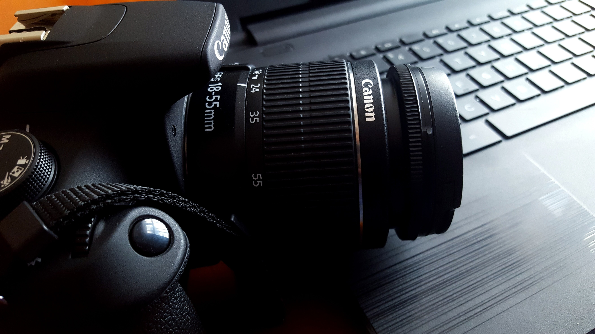
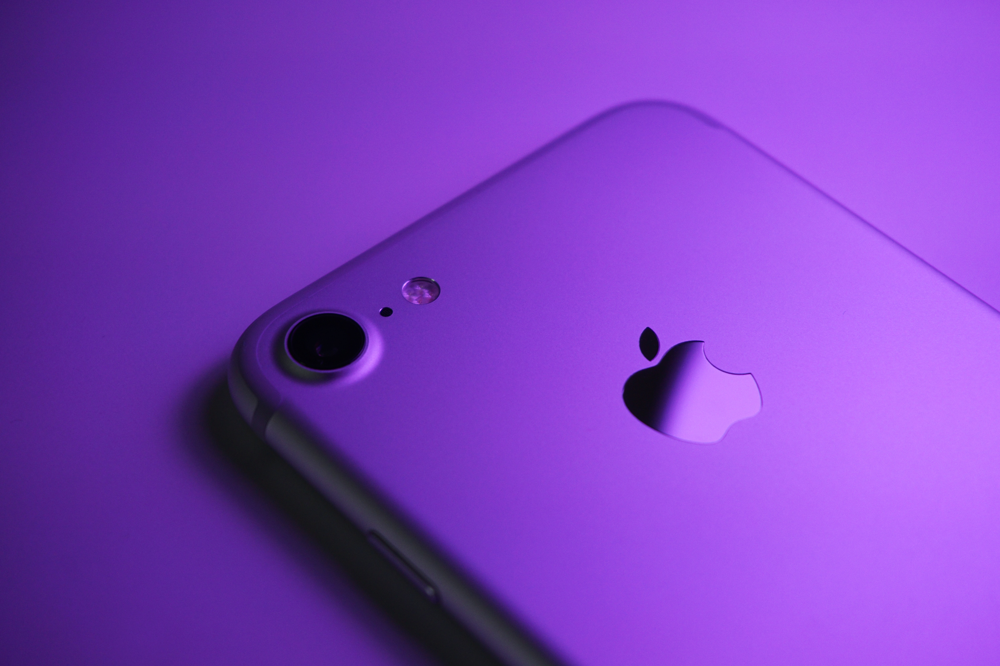
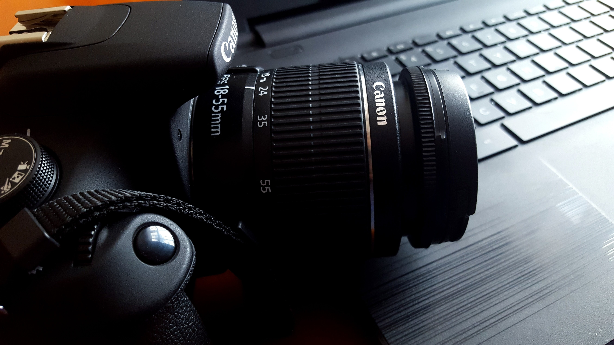
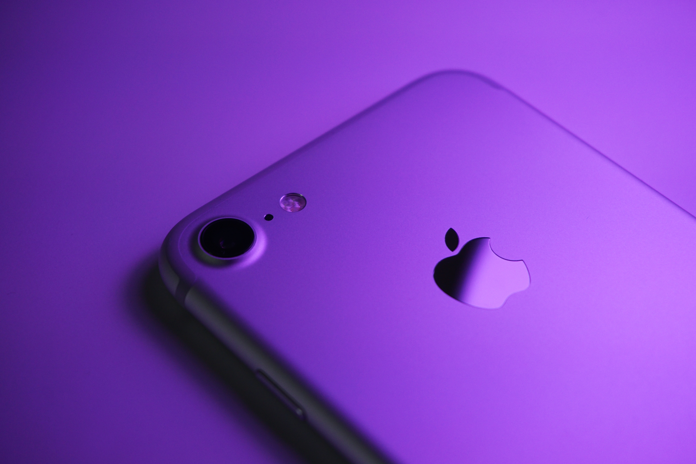

Creative
Photography Lakshya Dhiman
Made for photographer, photo studios, design agencies.
Create
your own uniqueand beautiful potograhy website !!
Made for photographer, photo studios, design agencies.
Create
your own uniqueand beautiful potograhy website !!
A career as a Photographer is a blend of technical and artistic
acumen.
Photography is an art, and it needs a lot of
practice and
perseverance
 




Hi, Here I write something about me.


A career as a Photographer is a blend of technical and artistic acumen. Photography is an art, and it needs a lot of practice and perseverance. Photographers produce images/ pictures that tell a specific story, give an internal message or record an event. With the rapid growth of the advertising.
A photographer is someone who is skilled at taking pictures or photographs with a camera. An amateur photographer takes pictures for their own use. A professional photographer takes pictures as all or part of their job. Many people hire a photographer for their wedding, debutante party or other special events. Photographers work in many different specialties. A news photographer can take photographs quickly when events are rapidly changing. They act as the "eyes" for their publications. Their job is to take as many photographs as they can so an editor can later select the best ones for the story. They correct photos with software, add captions, and send them to their editors. Many news photographers also shoot rapid sequences of film as short videos. An aerial photographer is comfortable around airplanes and is skilled at taking high and low altitude pictures. They work with specialized cameras which can take infrared, three-dimensional, black and white and color aerial photographs. A still life photographer takes pictures of still life or inanimate objects. This can be for advertising, art or science. The subjects may be food, products, or nature studies. Still life photographers must know how to use lighting, angles and have other skills to make an object look as good in movies as it does in real life. A fashion photographer takes pictures of clothing, makeup, hair designs and other similar products. They shoot pictures of models. In addition to fashion, they may specialize in areas such as the music industry or movies.
A photographer is someone who is skilled at taking pictures or photographs with a camera. An amateur photographer takes pictures for their own use. A professional photographer takes pictures as all or part of their job. Many people hire a photographer for their wedding, debutante party or other special events. Photographers work in many different specialties. A news photographer can take photographs quickly when events are rapidly changing. They act as the "eyes" for their publications. Their job is to take as many photographs as they can so an editor can later select the best ones for the story. They correct photos with software, add captions, and send them to their editors. Many news photographers also shoot rapid sequences of film as short videos. An aerial photographer is comfortable around airplanes and is skilled at taking high and low altitude pictures. They work with specialized cameras which can take infrared, three-dimensional, black and white and color aerial photographs. A still life photographer takes pictures of still life or inanimate objects. This can be for advertising, art or science. The subjects may be food, products, or nature studies. Still life photographers must know how to use lighting, angles and have other skills to make an object look as good in movies as it does in real life.